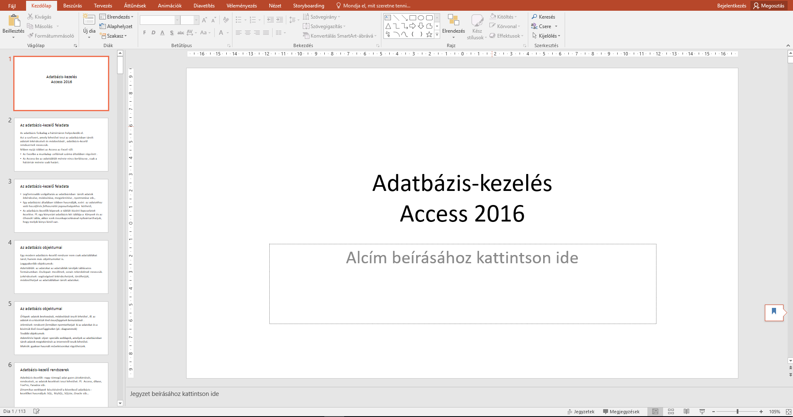

Adatbázisrendszerek
Tematika
- Az adatbázis-kezelő feladata
- Az adatbázis objektumai
- adatbázis-kezelő rendszerek
- Az adattáblák kezelése
- Az adattáblák kezelése, kulcs fogalma
- Rekordok felvitele, módosítása, törlések
- adattábla megjelenése, formázása
- Statisztikai számítások a táblában
- Keresés: választó, törlő, frissítő stb.
- Adattáblák létrehozása és összekapcsolása
- Táblák feltöltése
- Űrlap készítése
- Jelentés készítése